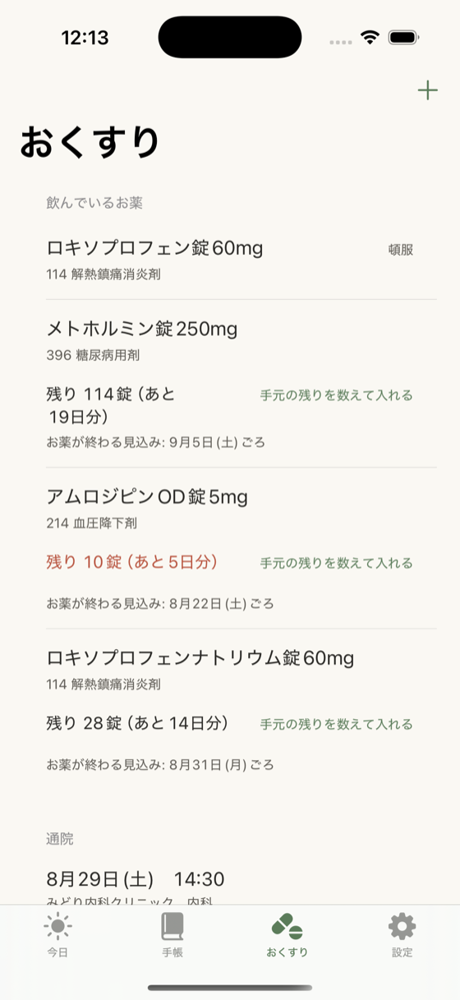

のみきろく
お薬を飲んだことを記録する、iPhone のアプリです。
朝・昼・夕・寝前の まとまりごとに、指で1回押すだけ。 同じ時間に5種類飲んでいても、押すのは1回で終わります。
広告なし・データ収集なし
できることは、3つです
-
1つめ
飲んだら、指で1回
大きな「飲んだ」のボタンを押すだけです。何時に押したかも一緒に残ります。
-
2つめ
時間になると、お知らせします
お知らせに出る「飲んだ」を押せば、アプリを開かなくても記録できます。
-
3つめ
病院に持っていく紙が作れます
いま飲んでいるお薬の一覧、財布に入るカード、1か月の記録。そのまま印刷できます。
画面を見てください
実際のアプリの画面です（見本のお薬を入れてあります）。


病院や入院のときに、渡せる紙
3種類の紙を作れます。プリンタがあれば［印刷する］でそのまま刷れます。 プリンタが無いときは、いったん保存して、コンビニのコピー機で印刷できます。


離れて暮らすご家族の方へ
親御さんの iPhone に入れて差し上げると、ご家族の iPhone から様子を見られます。 設定するのは1回だけです。
ご家族の画面に出るもの
- 今日の記録（朝・昼・夕・寝前のどれを飲んだか）
- 直近14日の記録
- お薬の名前と、その分類
- お薬の残りと、終わる見込みの日
- 次の受診の予定
- 体調メモ ―― ご本人が「共有する」を選んだときだけ出ます。選ばなければ、そもそも送られません
ご家族には、できないことがあります
ご家族の画面からできるのは、代わりに記録を付けることだけです。 お薬を足したり消したり、飲む量を変えたりはできません。
ご家族が付けた記録には 「家族が記録」と印が残ります。 お医者さんに渡す紙にも、その印が出ます。どちらが押したか分からなくなりません。
「飲んでいません」とは知らせません
アプリがご家族に自動でお知らせするのは、記録が届いていないことだけです。 3日以上、新しい記録が届かないときに、ご家族の画面でお知らせします。
「飲んでいない」と決めつけるお知らせは出しません。押し忘れただけのことも多く、 見張られている気持ちにさせないためです。
ご家族の画面には「最終受信（最後に受け取った時刻）」を常に出しています。 止まっていることに気づけない作りにはしていません。
始め方と、やめ方
ご本人の iPhone で ［設定］→［ご家族と共有する］を開き、 何が見えるようになるかをご確認いただいたうえで、LINE・メール・AirDrop で招待を送ります。 共有できるのは お一人までです。
共有は いつでも1回押すだけでやめられます。 やめると、ご家族の画面からはすぐに見えなくなります。
この共有は、あとに書く有料の機能に入っています。 iPhone の iCloud にサインインしている必要があります。
だいじな注意
このアプリは、お薬について何も判断しません
記録とお知らせをするだけです。飲み合わせの確認も、飲み忘れたときの対処も示しません。 医療機器ではありません。
飲む量・飲む回数・飲む時間は、お医者さんや薬剤師さんの指示に従ってください。 このアプリはその指示を書き写しておくための手帳です。
体調が悪いときは、アプリを見ずに医療機関へご連絡ください。 いつもと違うと感じたときは、かかりつけの医療機関にご相談ください。
お薬の分類の名前は、厚生労働省の一覧に書かれている言葉をそのまま書き写しています。 「何のためのお薬か」をアプリが説明することはありません。
お金のこと
ずっと無料で使えるところ
お薬の時間のお知らせと、飲んだ記録は、これからもずっと無料です。 安全に関わるところにお金をいただく作りにはしていません。
- お薬の登録（種類の数に制限はありません）
- 飲んだ・飲まなかったの記録と、お知らせ
- 手帳（はじめてからの全部の期間を見返せます）
- 通院の予定と、体調メモ
- 広告が出ないこと
有料の「のみきろく Plus」でできること
記録を 外に持ち出すことと、先を見ることが有料です。
- お薬の残りと、終わる見込みの日
- 離れて暮らすご家族との共有
- 病院や入院のときに渡せる紙（3種類）
- 記録を表の形（CSV）で書き出すこと。Excel や Numbers でそのまま開けます
最初の30日は、全部の機能をお試しいただけます。 勝手に更新されることはありません。カードの登録も要りません。
30日を過ぎたあとのお支払いは、1回だけの「買い切り」と 1年ごとの2つから選べます。金額はアプリの中の購入画面に出ます。
Apple の「ファミリー共有」に対応しています。 お子さんが買って、親御さんが使うことができます。

よくあるご質問
お知らせが、途中で来なくなりませんか
iPhone は1つのアプリにつき 64件までしかお知らせを覚えていられません。 お薬1種類ごとにお知らせを用意する作りだと、種類が多い方は1週間ほどで枠が尽きて、 そこから先が黙って鳴らなくなります。
のみきろくは 時点ごとに1件だけ用意し、毎日飲むお薬は「繰り返し」の 1件にまとめています。全体で48件を超えないようにして、残りは押し忘れたときの 追い打ち用に空けてあります。
そのうえで、いま何件用意できているかを［設定］の「通知の状態」に出しています。 止まっていることに気づけない作りにはしません。
集中モード（おやすみモード）中でも、お薬の時間のお知らせは鳴るようにしています。
お知らせを押すだけで記録できますか
できます。お知らせの［飲んだ］を押すと、アプリが開かないまま、 その時間のお薬すべてに記録が付きます。［あとで］を押すと、30分後にもう一度お知らせします。
お知らせの文には、はじめの状態ではお薬の名前を出していません。 画面をつけたときに薬の名前が出ると、ご病気が周りの方に伝わってしまうためです。 ［設定］→「通知の中身」で、名前を出すように変えることもできます。
お薬の名前が見つかりません
厚生労働省の一覧から 12,400件のお薬の名前をアプリに入れてあります。 ひらがな・カタカナ・半角のどれで入力しても探せます。
それでも出てこないときは、［見つからないお薬を手で入れる］から 名前を打って登録できます。登録できないお薬はありません。
お薬手帳の QR コード（四角い模様）の読み取りは、まだ入れていません。 実物の明細で確かめられるまでは出しません。読み違えると、飲む量が違って記録されてしまうためです。
夜中に飲んだお薬が、翌日の記録になってしまいます
1日のはじまりを何時にするかを、［設定］→「1日の区切り」で 0時から6時まで選べます。はじめの状態は4時なので、深夜3時に飲んだ寝る前のお薬は、 前の日の記録になります。
お薬の残りの数が合いません
記録していない分は差し引かれないので、実物とはだんだんずれていきます。 ずれて当たり前という前提の作りにしてあり、 ［おくすり］の「手元の残りを数えて入れる」で、いつでも数え直せます。
「飲んだ」と記録した分だけを引いています。記録のない分を「たぶん飲んだ」として 引くことはしません。あてずっぽうを混ぜると、お薬が終わる見込みの日が信用できなくなります。
買ったのに、有料の機能が使えません
買ったときと同じ Apple ID でサインインした状態で、 ［設定］→「購入したものを復元する」を押してください。 購入は Apple ID に結びついているので、iPhone を買い替えても引き継がれます。
iPhone を買い替えるときは
記録はご自身の iCloud に保存されているので、新しい iPhone で同じ Apple ID に サインインしてアプリを入れると、戻ってきます。
戻るのは iCloud に入った分までです。 iCloud にサインインしていない場合や、空きが足りない場合は、その iPhone の中だけに残ります。 いまどちらの状態かは、［設定］の「iCloudへの保存」に常に出しています。 念のため、大事な記録は表の形（CSV）で書き出して取っておくこともできます。
あなたの記録は、どこにありますか
作った人（開発者）は、あなたの記録を見られません
このアプリには、広告も、利用のようすを集める仕組みも、開発者のサーバーもありません。 会員登録も要りません。お薬の名前・飲んだ記録・体調メモが、開発者や他の会社に渡ることは 一切ありません。
記録は この iPhone の中と、ご自身の iCloud（Apple のアカウント）に 入ります。iPhone を替えても記録が消えないためのもので、開発者が中身を見ることはできません。
ご家族との共有をオンにしたときだけ、共有した お一人に、 ご確認いただいた内容が見えるようになります。
くわしくはプライバシーポリシーをご覧ください。
お薬の情報の出どころ
出典: 厚生労働省 薬価基準収載品目リスト（内用薬・注射薬・外用薬）。 本アプリが検索用に加工しています。
この一覧はアプリの中に入っていて、名前を探すときに通信は起きません。
お困りのときは
ご質問・うまく動かないとき・お薬の名前や表示の間違いのご指摘は、こちらへメールをください。
nosunosukawa@gmail.com個人で作っています。いただいたメールは全部読みます。 お返事に1〜2日いただくことがあります。